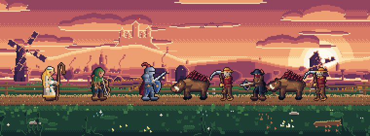
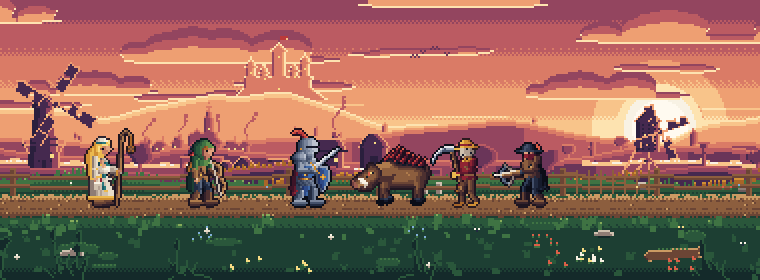

Lluvia de flechas · ahora
Tres oleadas, cada una con un tercio del daño (el total es el mismo), cada 0,45 s. Flechas grandes que caen desde más alto, se clavan levantando tierra y desaparecen antes de que llegue la siguiente, para que se distingan las tres. La franja llega algo más allá de la oleada enemiga.

Lluvia de flechas · antes
Una sola andanada de flechas pequeñas.

Grito de guerra · ahora
El Knight grita, el anillo recorre el suelo y cada héroe lleva un sigilo de latón a los pies que palpita, con chevrones dorados subiendo a los lados: fuerza que sube, sin fuego.

Grito de guerra · antes
Llamas a los pies de cada héroe: parecía que se estaban quemando.
